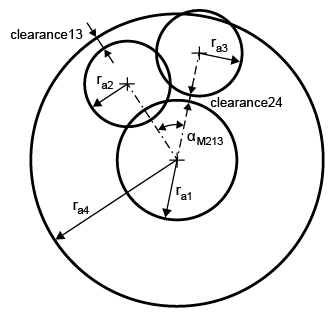

|
|
|


4 个齿轮的几何-精细配比
在精细配比过程中无法更改中心距。此计算使用 选项卡中输入的中心距。
但是，如果齿轮 4 是内齿轮，您还可以选择 选项。如果选择 选项，还会检查内齿轮的 V 圆直径，并且所需的输出减速比为 z3/z2。在这种情况下，所有中心距都会自动变化，并显示所有可能的解。结果中会显示 αM213、clearance13 和 clearance24 的值。

图 15.97：4 齿轮配置
Geometry-Fine Sizing for 4 gears
Center distances cannot be changed in the fine sizing process. The center distances entered in the tab are used in this calculation.
However, if gear 4 is an internal toothing, you can also select the option. If you select the option, the internal gear’s V-circle diameter is also checked and the required output reduction is z3/z2. In this case, all center distances are varied automatically, and all possible solutions are displayed. Values for αM213, clearance13 and clearance24 are displayed in the results.
Figure 15.97: Figure: 4-gear configuration